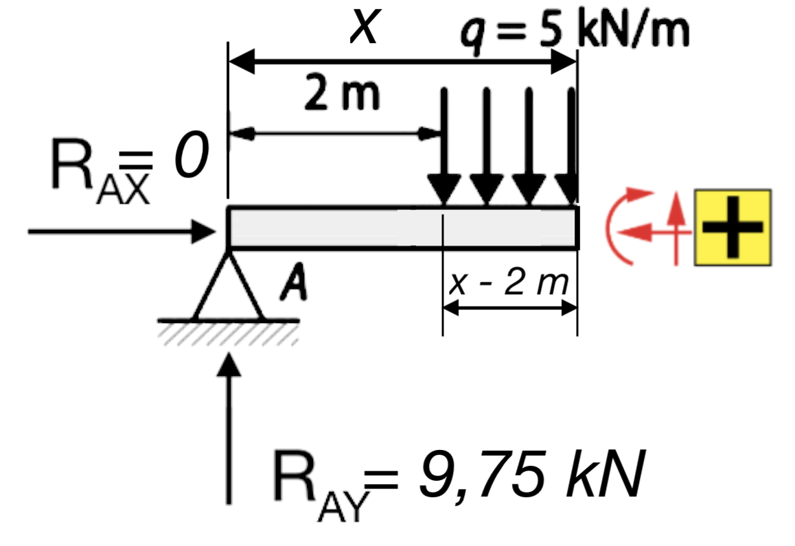
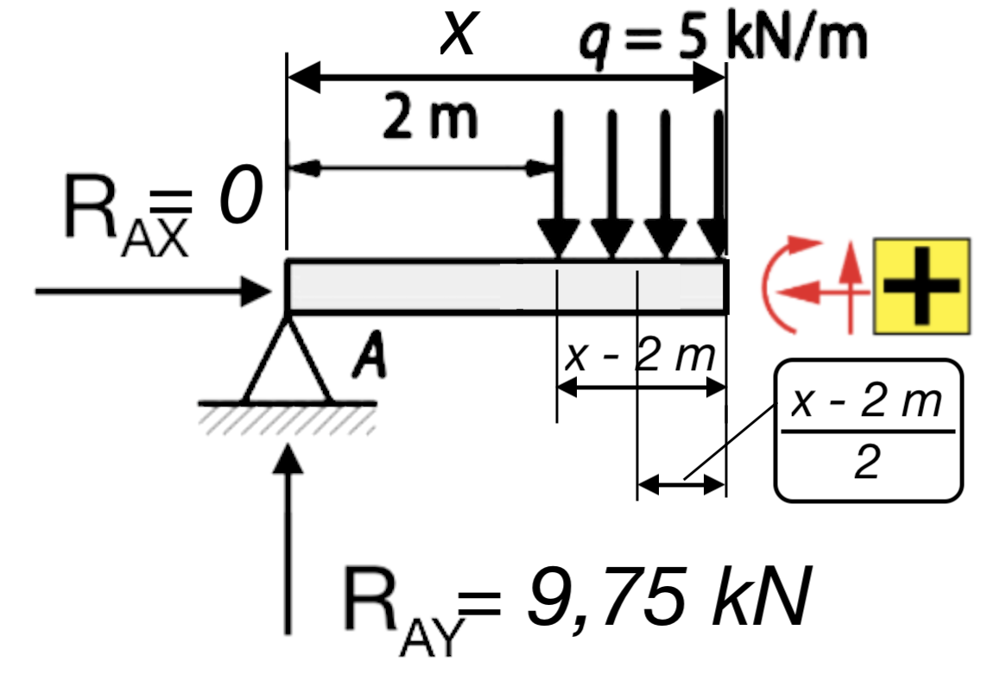
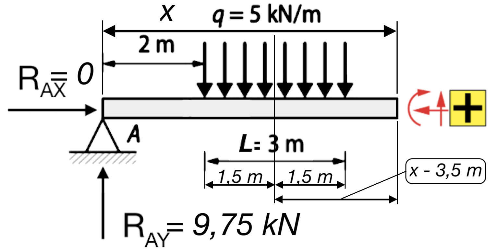
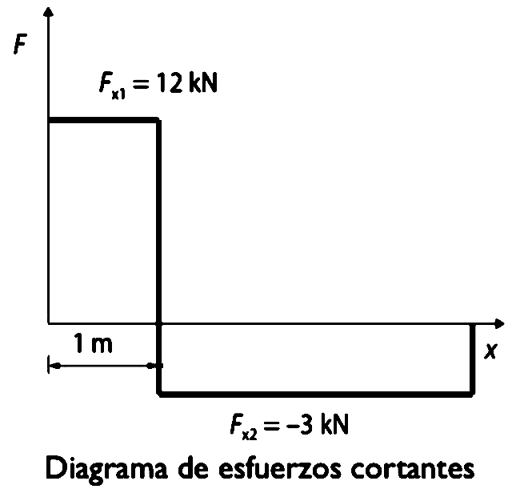
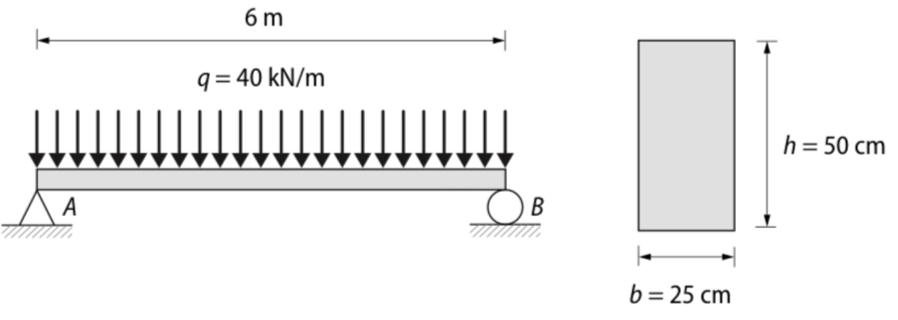

Enunciado
Elabora los diagramas de momentos flectores y de esfuerzos cortantes correspondientes a la viga de la figura:

Elabora los diagramas de momentos flectores y de esfuerzos cortantes correspondientes a la viga de la figura:
Determinamos las reacciones según los tipos de apoyos que vemos en la figura:

Equilibrio de fuerzas en el eje horizontal \(\sum_{}^{}F_{x}=0\):
\[R_{AX}=0\]
Equilibrio de fuerzas en el eje vertical \(\sum_{}^{}F_{y}=0\) (positivas fuerzas hacia arriba y negativas fuerzas hacia abajo). La carga distribuida tiene un valor en kN/m, por lo que hay que multiplicarla por toda la longitud sobre la que actúa para obtener la fuerza total que ejerce sobre la viga (q·L):
\[R_{AY}-q·L+R_{BY}=0\]
Equilibrio de momentos de fuerzas, referido a una sección cualquiera de la viga \(\sum_{}^{}M_{A}=0\). Como en el ejemplo anterior, calcularemos los momentos en el apoyo A, que es donde hay más restricciones.
A efectos de momento, la carga distribuida equivale a una carga de valor \(q·L\) aplicada en el centro exacto de la distribución. En este caso, estará aplicada a a una distancia de 2 + L/2 del apoyo A. La ecuación quedará, por tanto (momentos positivos en sentido antihorario y negativos en sentido horario):
\[-q·L·(2m+\frac{L}{2} )+R_{BY}·(2+L+5)m=0\]
Sustituyendo los datos del problema, nos queda este sistema de ecuaciones:
\[\left \{\begin{array}{r}R_{AX}=0\\ R_{AY}-5 \ \frac{kN}{m}·3 \ m+R_{BY}=0\\ -5 \ \frac{kN}{m} ·3·(2+\frac{3}{2} ) \ m+R_{BY}·(2+3+5)\ m=0 \end{array} \right. \]
Operamos y escribimos el sistema sin unidades para simplificar (sabemos que todas las fuerzas irán en kN y todas las distancias en m):
\[\left \{\begin{array}{r}R_{AX}=0\\ R_{AY}-15+R_{BY}=0\\ -52,5+10R_{BY}=0 \end{array} \right.\]
Resolviendo el sistema, obtenemos los valores de las reacciones:
\[\begin{array}{c}
R_{AX}=0N\\
R_{AY}=9,75 \ kN\\
R_{BY}=5,25 \ kN
\end{array}\]
El procedimiento consiste en partir la viga en tramos, separados por cambios de carga o apoyos. Es decir, recorriendo la viga de derecha a izquierda, se definirá un tramo cuando aparezca una nueva carga o un apoyo.
En este caso, la viga se dividirá en 3 tramos:

Por tanto, las leyes de esfuerzos deberemos calcularlas en estos tres tramos.
Nos encontramos con el siguiente trozo de viga (se han indicado en rojo los sentidos positivos de los esfuerzos):

Esfuerzo axil:
El esfuerzo axil es nulo, ya que no hay fuerzas en dirección paralela al eje de la viga:
\[N_{A-C}(x)=R_{AX}=0 \ N\]
Esfuerzo cortante:
La componente vertical RAY de la reacción en el apoyo A es la única fuerza en dirección perpendicular a la viga que genera cortante. Como va hacia arriba, se cuenta como positiva:
\[V_{A-C}(x)=R_{AY}=9,75 \ kN\]
Momento flector:
El momento flector es generado por la reacción RAY, cuya distancia a la sección x es la propia distancia x. Genera un momento en sentido horario, por lo que lo consideramos positivo. Fíjate que la reacción RAX no generaría momento flector aunque no fuera nula, porque su línea de actuación (dirección de la fuerza) pasa directamente por la sección x.
\[M_{A-C}(x)=R_{AY}·x=9,75x \ kN·m\]
Nos encontramos con el siguiente trozo de viga:

Esfuerzo axil:
El esfuerzo axil es nulo, ya que no hay fuerzas en dirección paralela al eje de la viga:
\[N_{C-D}(x)=R_{AX}=0 \ N\]
Esfuerzo cortante:
Al cortante generado por la reacción RAY, se le añade la fuerza distribuida, que genera un cortante negativo. Como la fuerza de la carga distribuida se calcula multiplicando q por su longitud de actuación, en este caso esa fuerza sería q·(x-2)
\[V_{C-D}(x)=R_{AY}-q(x-2)=9,75-5(x-2)=19,75-5x \ kN\]
Momento flector:
Al momento flector generado por la reacción RAY se suma el producido por la carga distribuida q, cuya distancia a la sección analizada es ahora \(\frac{x-2 \ m}{2}\), como puedes ver en la imagen:

Esta fuerza genera un momento en sentido antihorario y, por tanto, negativo. La expresión queda:
\[M_{C-D}(x)=R_{AY}·x-q(x-2)\frac{x-2}{2}=9,75x-5(x-2)\frac{x-2}{2}=9,75x-2,5(x-2)^{2}\]
Operando:
\[M_{C-D}(x)=9,75x-2,5(x-2)^{2}=9,75x-2,5(x^{2}-2x+4)=9,75x -2,5x^{2}+10x-10\]
Y, finalmente, podemos expresar el momento como:
\[M_{C-D}(x)= -2,5x^{2}+19,75x-10 \ (kN·m)\]
Nos encontramos con el siguiente trozo de viga:

Esfuerzo axil:
El esfuerzo axil es nulo, ya que no hay fuerzas en dirección paralela al eje de la viga:
\[N_{D-B}(x)=R_{AX}=0 \ N\]
Esfuerzo cortante:
Al cortante generado por la reacción RAY, se le añade la fuerza distribuida, que genera un cortante negativo. Como la fuerza de la carga distribuida se calcula multiplicando q por su longitud de actuación, en este caso esa fuerza sería q·L
\[V_{D-B}(x)=R_{AY}-q·L=9,75-5·3=-5,25 \ kN\]
Momento flector:
Al momento flector generado por la reacción RAY se suma el producido por la carga distribuida q, cuya distancia a la sección analizada es ahora \(x-3,5 \ m \), como puedes ver en la imagen:

Esta fuerza genera un momento en sentido antihorario y, por tanto, negativo. La expresión queda:
\[M_{D-B}(x)=R_{AY}·x-q·L(x-3,5)=9,75x-5·3(x-3,5)=9,75x-15(x-3,5)\]
Operando, podemos expresar finalmente el momento como:
\[M_{D-B}(x)= 52,5-5,25x \ (kN·m)\]
Por último, hay que dibujar las funciones que hemos obtenido en el paso anterior, siendo x el eje horizontal y estando el origen de coordenadas en el apoyo A.
El diagrama de esfuerzos axiles no tiene sentido dibujarlo, ya que N(x) = 0 para toda la viga. Dibujaremos, por tanto, los diagramas de esfuerzos cortantes y de momentos flectores.
Recordamos que, para cada tramo, solo vale la ecuación correspondiente. Estas ecuaciones son, recapitulando:
\[ \begin{align*}
\textbf{Esfuerzo cortante } V(x): \quad
V(x) &=
\begin{cases}
+9,75 & 0 \le x < 2 \\[2mm]
19,75 - 5x & 2 \le x \le 5 \\[2mm]
-5,25 & 5 < x \le 10
\end{cases}
\quad [\text{kN}]
\\[6mm]
\textbf{Momento flector } M(x): \quad
M(x) &=
\begin{cases}
9,75x & 0 \le x < 2 \\[2mm]
-2,5x^2 + 19,75x - 10 & 2 \le x \le 5 \\[2mm]
-5,25x + 52,5 & 5 < x \le 10
\end{cases}
\quad [\text{kN·m}]
\\[6mm]
\textbf{Punto de momento máximo:} \quad
V(x) &= 0 \Rightarrow 19,75 - 5x = 0 \Rightarrow x = 3,95\ \text{m} \\[2mm]
M_{\text{máx}} &= -2,5(3,95)^2 + 19,75(3,95) - 10 = 29,006\ \text{kN·m}
\end{align*} \]
Fíjate que, para calcular el momento máximo, hemos hecho V(x) = 0. Esto es porque el esfuerzo cortante es la derivada del momento flector \(V(x) = \frac{dM(x)}{dx} \).
Con esta información, podemos ya dibujar los diagramas fácilmente:


La viga de la figura es de madera laminada de perfil rectangular de 25 x 50 cm y soporta una carga uniformemente distribuida de 3 kN/m.

Solución:
a) (Partiendo del punto A)
• Para 0m ≤ x ≤ 6 m → M(x) = 120x - 20x2 kN·m
Momento máximo en x = 3 m : Mmax = 180 kN·m
• Para 0m ≤ x ≤ 6 m → V(xs) = 12-40x kN
b ) σt = 17.280 kN/m2; σc = -17.280 kN/m2
Obra publicada con Licencia Creative Commons Reconocimiento No comercial Compartir igual 4.0